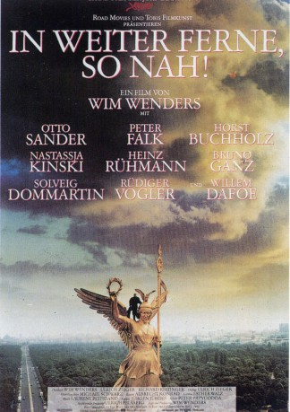
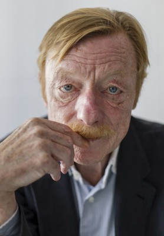
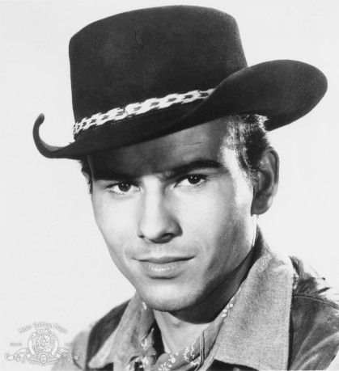
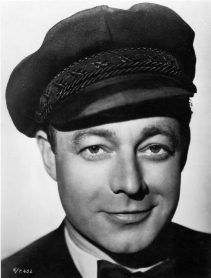

#8780 In weiter Ferne, so nah!
 
 IMDB-Wertung: 7.3 / 10
IMDB-Wertung: 7.3 / 10  Metascore: 0
Metascore: 0 
Engel Cassiel hat die Lust am himmlischen Dasein verloren. Tagaus, tagein beobachtet er die Menschen und ist dazu verurteilt, das Leben immer nur als Zeuge und als Teilnehmer zu erleben. Schließlich wechselt Cassiel die Seite und wird zum Menschen. Doch seine menschliche Existenz ist nicht vom Glück verfolgt, und Cassiel wird in seiner Not Assistent eines Gangsters. Als er aber erkennt, mit welchen Mitteln sein vermeintlicher Freund Geschäfte macht, entschließt er sich zum Eingreifen.
Jahr: 1993
Dauer: 146 Minuten
FSK: 6
Land: Deutschland Studio: TobisTonspuren:
Untertitel:
Auflösung: 1080p (1920x1040) Größe: 11161 MB
Genre: Drama, Fantasy, Liebe
Regisseur:  Wim Wenders
Wim Wenders
Drehbuch: Wim Wenders
Soundtrack: Laurent Petitgand, Graeme Revell
Darsteller:
-  Otto Sander als Cassiel
 Peter Falk als Peter Falk
Peter Falk als Peter Falk-  Horst Buchholz als Tony Baker
 Mikhail Gorbachev als Mikhail Gorbachev
Mikhail Gorbachev als Mikhail Gorbachev Nastassja Kinski als Raphaela
Nastassja Kinski als Raphaela-  Heinz Rühmann als Konrad
 Bruno Ganz als Damiel
Bruno Ganz als Damiel- Solveig Dommartin als Marion
 Rüdiger Vogler als Phillip Winter
Rüdiger Vogler als Phillip Winter- Lou Reed als Lou Reed
 Willem Dafoe als Emit Flesti
Willem Dafoe als Emit Flesti- Monika Hansen als Hanna / Gertrud Becker
 Günter Meisner als Fälscher
Günter Meisner als Fälscher Hanns Zischler als Dr. Becker
Hanns Zischler als Dr. Becker- Yella Rottländer als Winter's Engel
- Andrzej Pieczynski als Czomsky
 Udo Samel als Sicherheitsbeamter
Udo Samel als Sicherheitsbeamter- Gerd Wameling als Sicherheitsbeamter
- Ronald Nitschke als Patzke
- Martin Olbertz als Sterbender
- Aline Krajewski als Raissa
- Tilmann Vierzig als Der Junge Konrad
- Antonia Westphal als Die Junge Hanna
- Ingo Schmitz als Anton Becker
- Sascha Wohlatz als Jugendlicher
- Lasse Lehmann als Jugendlicher
- Marcel Jelinski als Jugendlicher
- Nils Schildhauer als Jugendlicher
- Patrick Winz als Jugendlicher
- Benjamin Winz als Jugendlicher
- Camilla Pontabry als Doria
- Frédéric Darié als Maurice
- Jean-Marie Rase als Jules
- Lajos Kovács als Lali
- Bruno Krief als Paul
- Armance Brown als Paula
- Henri Alekan als Kapitän
- Hugues Delforge als Les Elastonautes
- Claude Poncelet als Les Elastonautes
- Susanne Jansen als Frau in der Galerie
- Bob Rutman als Künstler
- Alexander Hauff als Taxifahrer
- Natan Fyodorovsky als Russe
- Louis Cochet als Louis
- Johanna Penski als Blumenfrau
- Steffi Hiller als Passant
- Eberhard Knappe als Passant
- Shefqet Namani als Hütchenspieler
- Klaus-Jürgen Steinmann als Polizist
- Matthias Zelic als Verkäufer
Datei: X:\1993\In weiter Ferne, so nah! (1993, FSK6, 1920x1040).mkv seit 30.04.2018
Festplatte: HD 1992-1995
 Es gibt insgesamt 68 Filme in der Gruppe '1993'
Es gibt insgesamt 68 Filme in der Gruppe '1993'